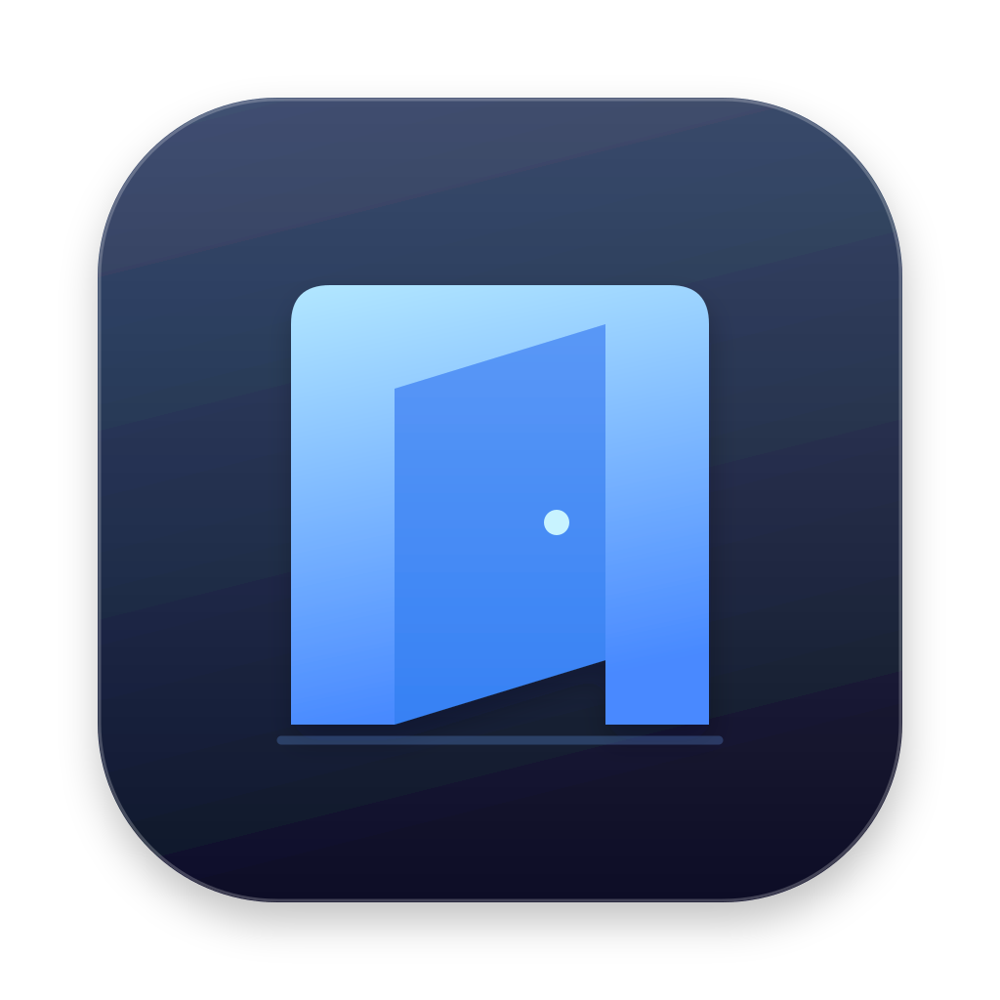
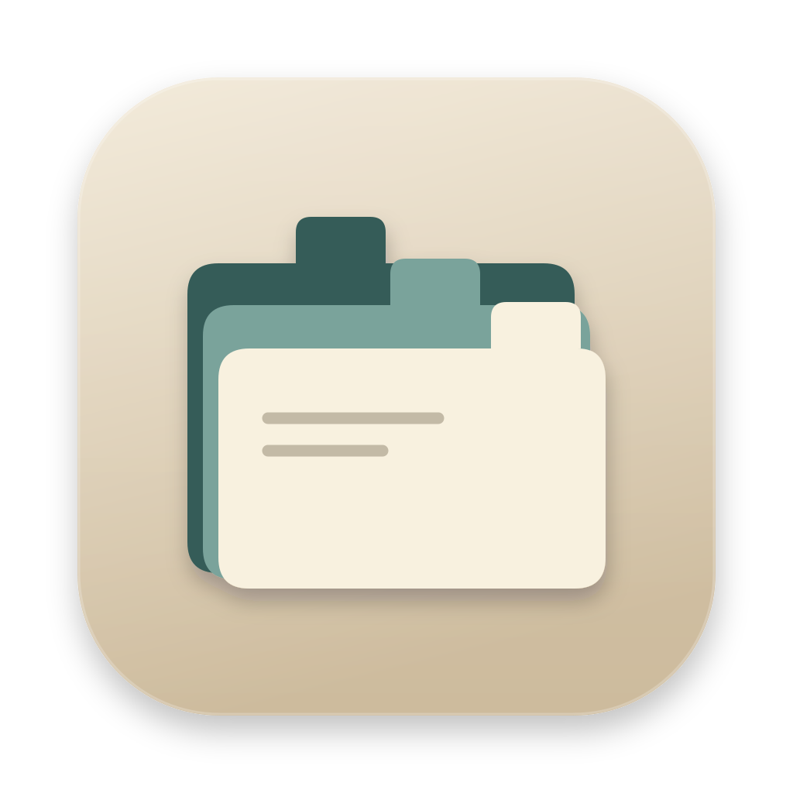
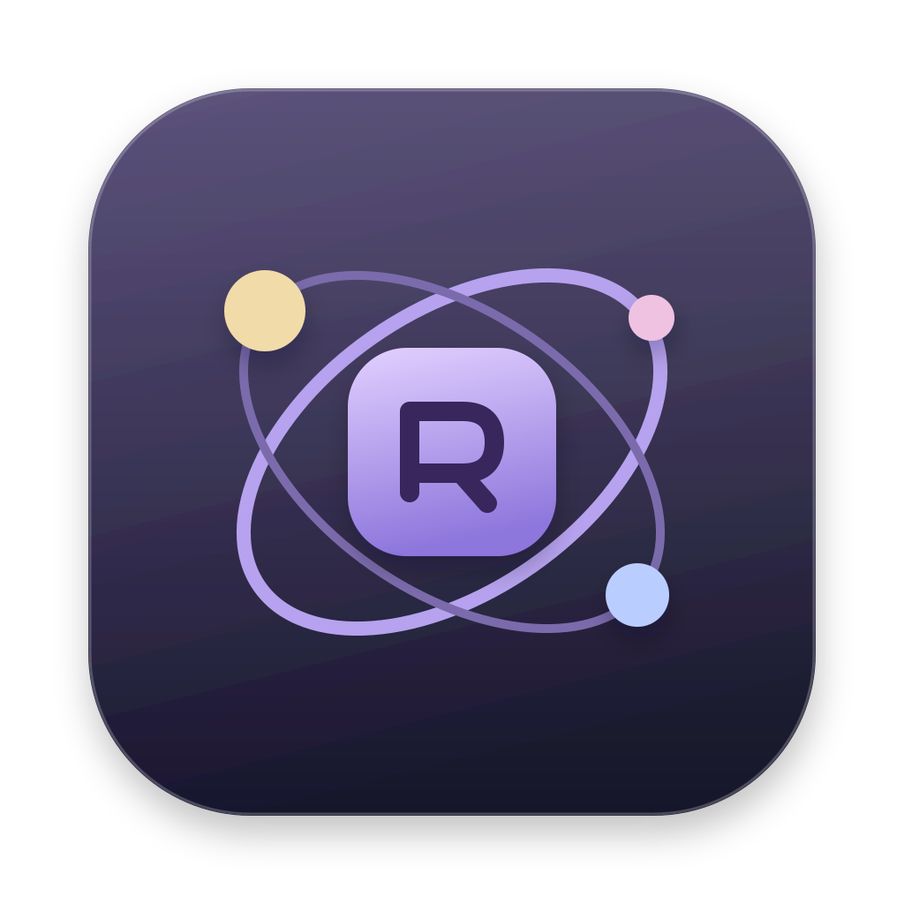
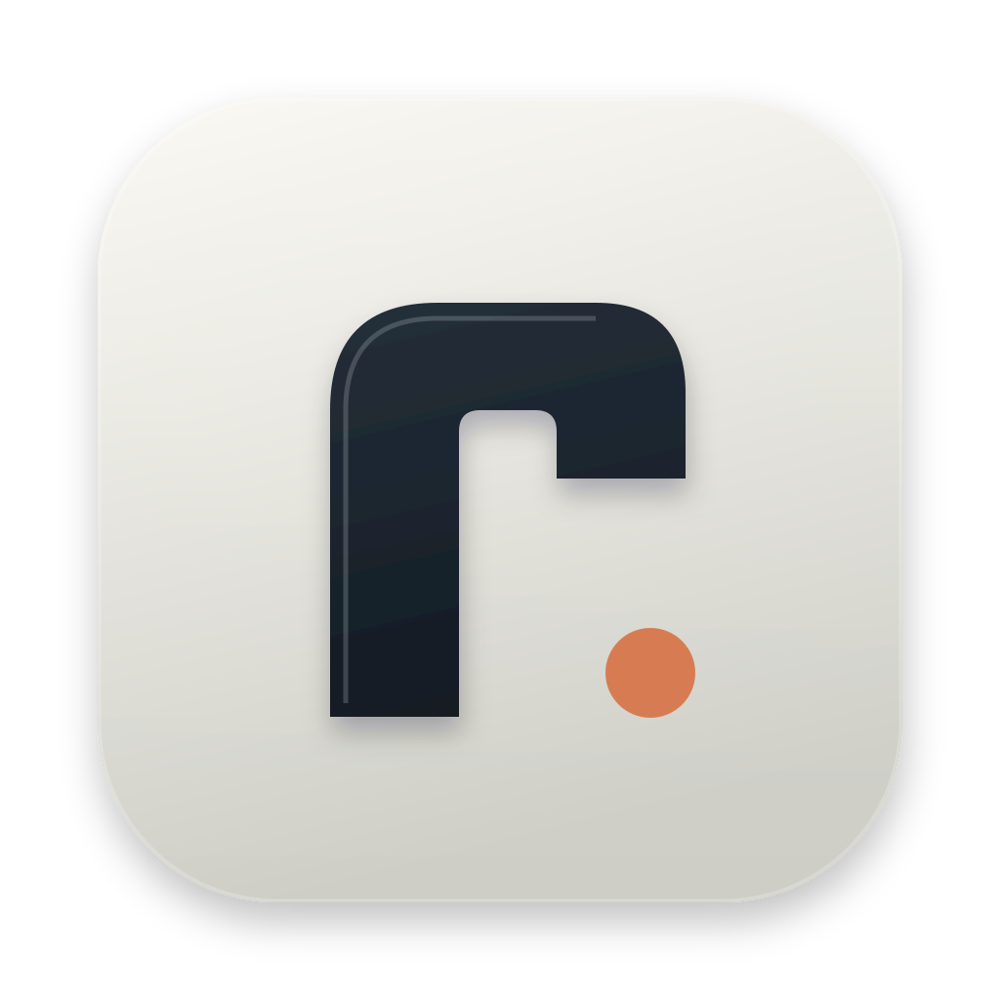
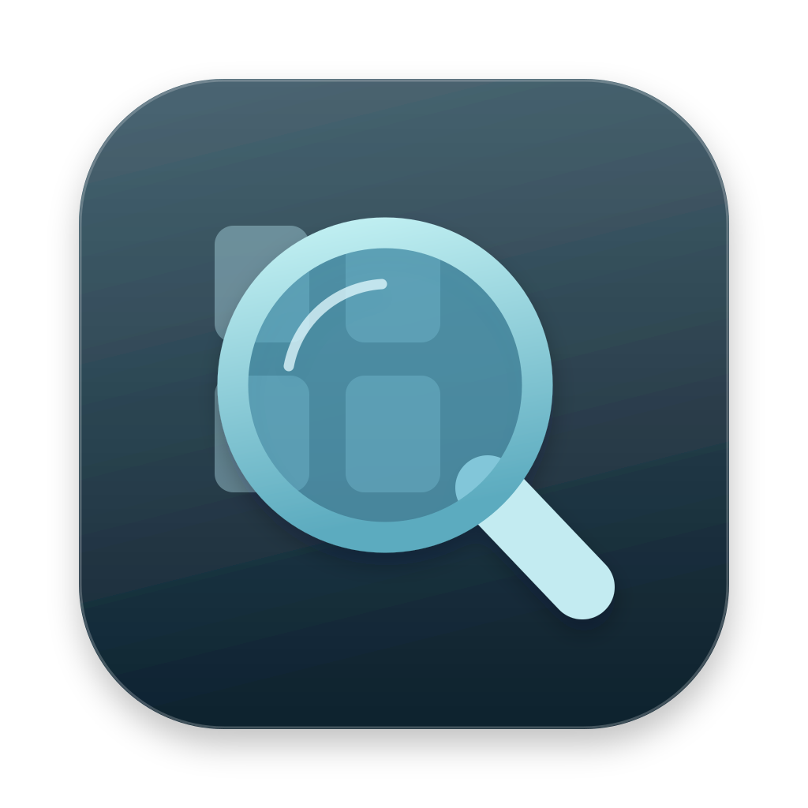
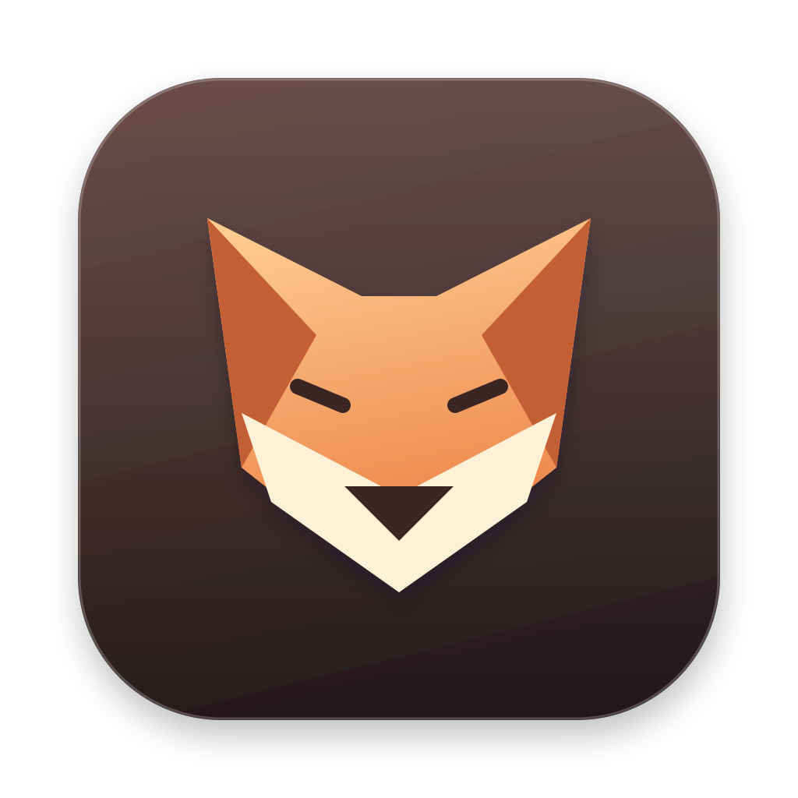
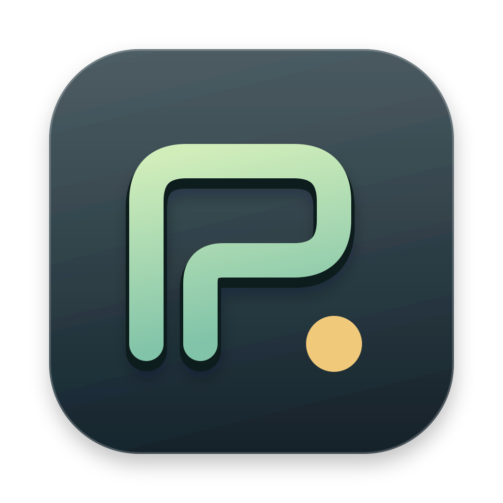
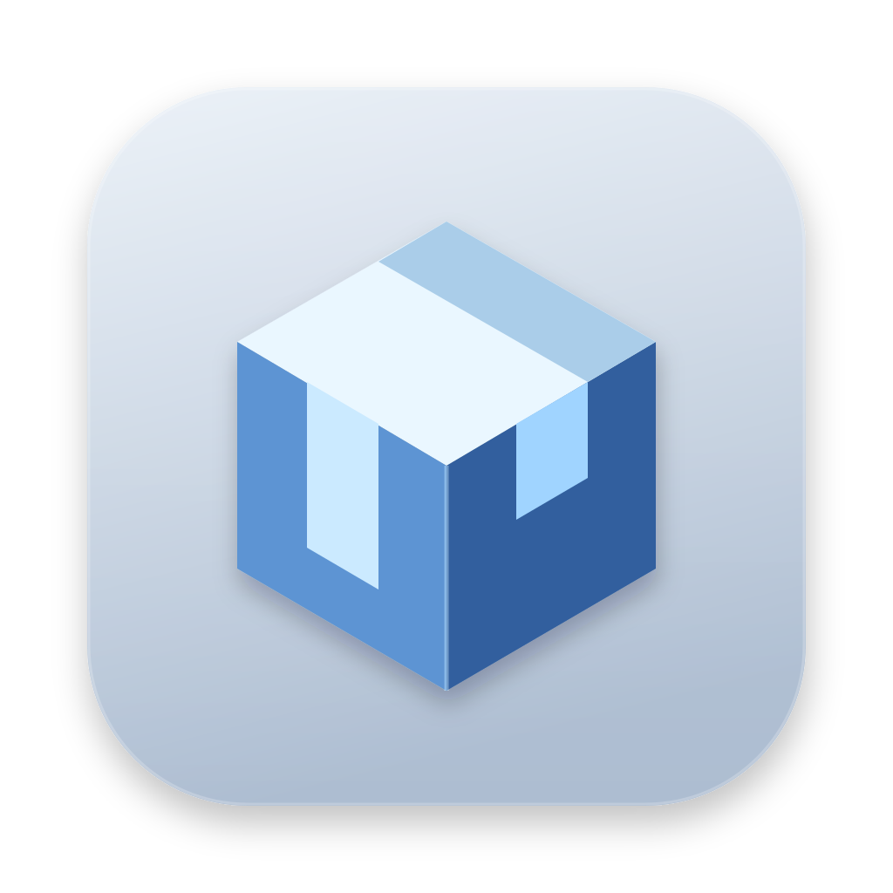
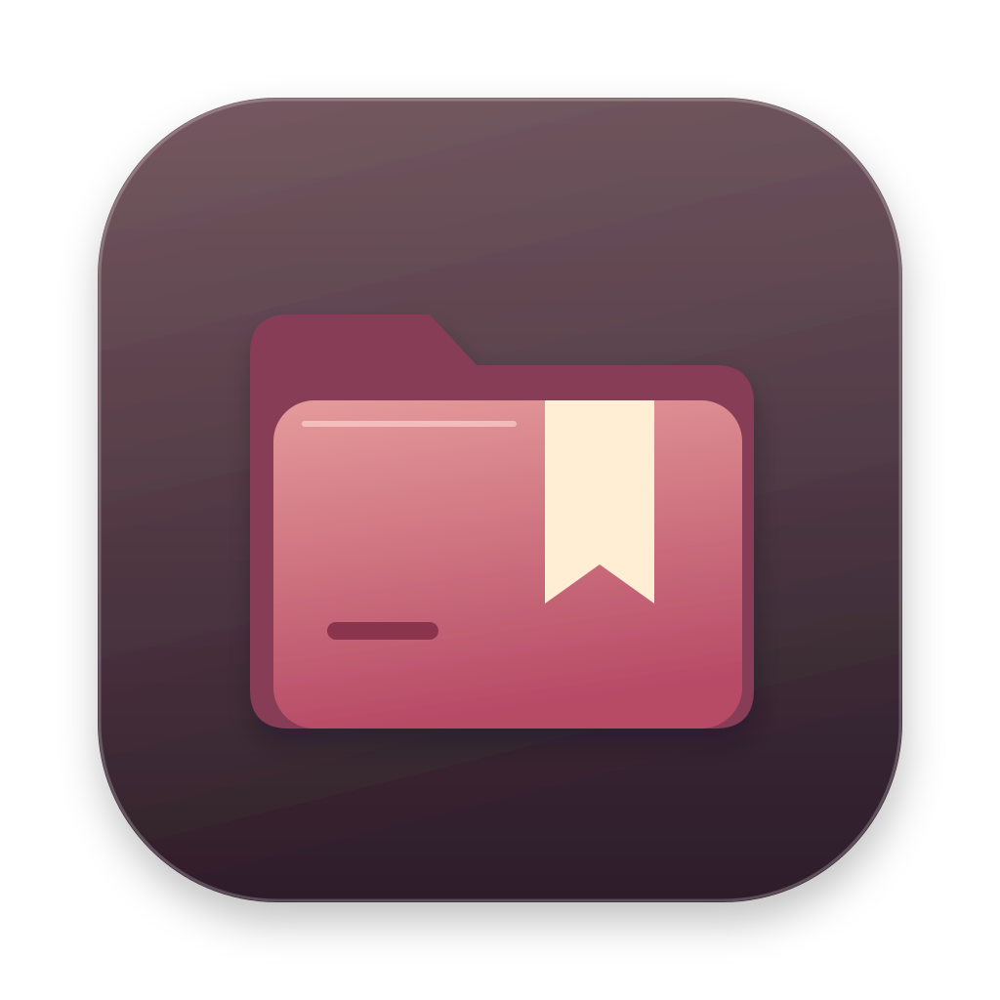
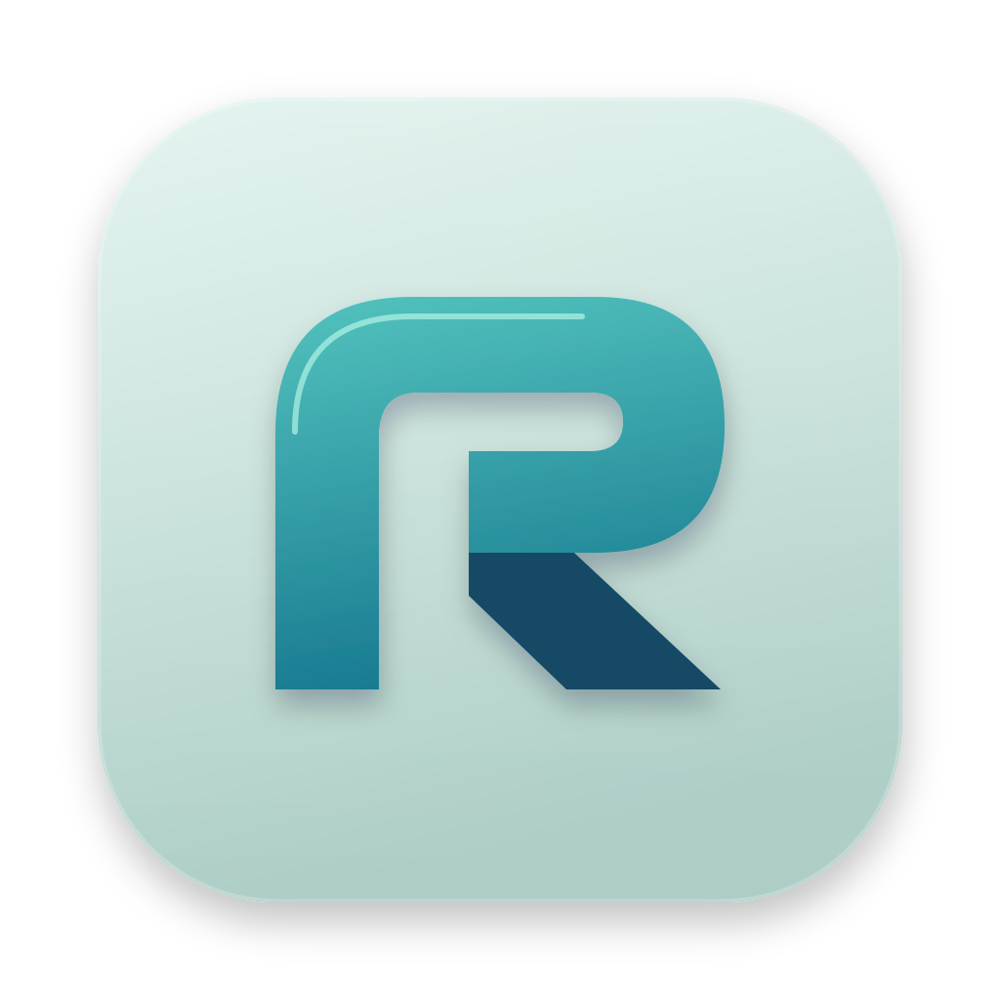

07
Portal
A new perspective
An open doorway in electric blue. A simple invitation to explore what is inside.
A wider exploration: architectural marks, tactile folders, a quick-footed mascot, and new monograms. Ten original suggestions, numbered 07–16 to follow the previous six.

A new perspective
An open doorway in electric blue. A simple invitation to explore what is inside.

Order, beautifully
Three tactile index dividers, each with its own tab. A warm, analog take on digital organization.

All your places
A central home with satellite files. Local disks, remote servers, and favorite places in one orbit.

Pure identity
A bold lowercase r cut into a porcelain tile. No folder metaphor; just a confident, lasting mark.

Look a little closer
A soft glass lens over a tiny file grid. A search-first direction with a cool, luminous finish.

Quick by nature
An angular fox face in burnt orange. An expressive mascot for a nimble, lightweight explorer.

One continuous thought
One unbroken route, ending in a bright waypoint. Minimal geometry with a sense of forward movement.

A different dimension
An isometric filing cube with an open corner. Architectural, precise, and quietly technical.

Find it again
A deep red folder and a cream bookmark. A warmer direction centered on favorites and things worth keeping.

Effortlessly in motion
Two fluid bands interlock into an abstract r. A vivid blue-green symbol for files that move freely.